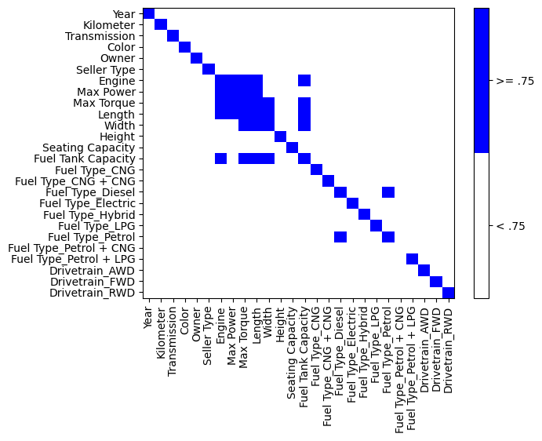
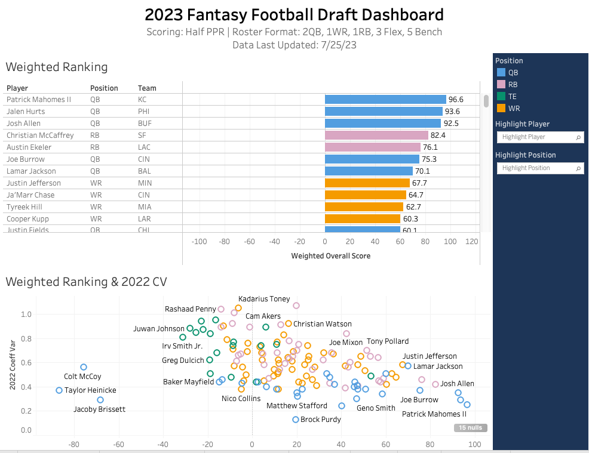

Driven young professional with experience advising Fortune 500 clients on technology initiatives. Currently pursuing a MS in Business Analytics. Seeking opportunities that involve utilizing technology to create beneficial solutions for companies and customers.
Assessed cyber risk for Fortune 500 clients in relation to governance, personas, channels, applications, and capabilities
Performed requirement gathering, stakeholder interviews, use case development, gap assessment, and roadmap prioritization
Deliverable creation, adapting content to stakeholder level, gathering and receiving feedback
Identified improvements within a non-profit funding process that reduced over 10,000 manual touchpoints annually
Co-managed a settlements automation project with projected savings of $4.8 million annually using JIRA
Led scrum meetings, tracked workstreams and user stories, and provided status updates to key stakeholders
Configured the Salesforce back end (Process Builder, approval process, etc.) for the White House internship application
Automated a manual process (previously done through emailing PDFs) for an internal client by developing a Visualforce web form and Salesforce application
Conducted user satisfaction and usage surveys, pre-deployment application testing, and customer support for existing Executive Office of the President (EOP) applications

